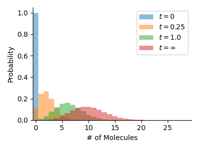
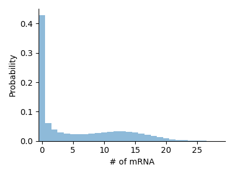

FiniteStateProjection.jl Documentation
Introduction
FiniteStateProjection.jl is a package that implements Finite State Projection algorithms for chemical reaction networks based on Catalyst.jl and ModelingToolkit. FiniteStateProjection.jl converts descriptions of reaction networks into ODEProblems that can be used to compute approximate solutions of the Chemical Master Equation with packages such as DifferentialEquations.jl.
FiniteStateProjection.jl works by converting a ReactionSystem into a function that computes the right-hand side of the Chemical Master Equation:
$\frac{\mathrm{d}}{\mathrm{d} t} P(t) = A P(t)$
This function is generated dynamically via build_rhs and specialised for each ReactionSystem. Users can use their preferred array types supporting CartesianIndices and provide additional features by overloading these functions.
Features:
- Flexible API for user-defined array types
- Automatic dimensionality reduction for systems with conserved quantities
- On-the-fly generation of specialised functions for improved performance
Examples
Birth-Death Model
This example models a linear birth-death process. The reaction network is easily defined using Catalyst.jl. Our truncated state space has length 50, which is enough for this simple system.
This system has no conserved quantities, so we use a NaiveIndexHandler to map from a one-dimensional array with offset 1 to the state of the system. See Index Handlers for more details.
using FiniteStateProjection, DifferentialEquations
@parameters r1, r2
rs = @reaction_network begin
r1, 0 --> A
r2, A --> 0
end r1 r2
sys = FSPSystem(rs)
# Parameters for our system
ps = [ 10.0, 1.0 ]
# Initial values
u0 = zeros(50)
u0[1] = 1.0
prob = convert(ODEProblem, NaiveIndexHandler(sys, 1), sys, u0, 10.0, ps)
sol = solve(prob, Vern7(), atol=1e-6)
Telegraph Model
Here we showcase the telegraph model, a simplistic description of mRNA transcription in biological cells. We have one gene that transitions stochastically between an on and an off state and produces mRNA molecules while it is in the on state.
This system technically consists of three different species, namely the two states of the gene and mRNA. It is clear, however, that these are not independent as $D_{on}(t) + D_{off}(t) = 1$. In order to solve the Chemical Master Equation we can therefore recover $D_{off}(t)$ from the other variables and the entire state of the system is described by only two variables: $D_{on}(t)$ and $M(t)$, as well as the total number of genes, which is a constant equal to $1$. The default index handler class DefaultIndexHandler does this for us automatically and maps the state of the system to a two-dimensional array. This showcases that we can often reduce the number of species in the system to make it easier to solve numerically.
using FiniteStateProjection, DifferentialEquations
@parameters r1 r2 r3 r4
rs = @reaction_network begin
r1, G_on --> G_on + M
(r2, r3), G_on <--> G_off
r4, M --> 0
end r1 r2 r3 r4
sys = FSPSystem(rs)
# There is one conserved quantity: G_on + G_off
cons = conservedquantities([1,0,0], sys)
# Parameters for our system
ps = [ 15.0, 0.25, 0.15, 1.0 ]
# Since G_on + G_off = const. we do not have to model the latter separately
u0 = zeros(2, 50)
u0[1,1] = 1.0
prob = convert(ODEProblem, DefaultIndexHandler(sys, 1), sys, u0, 10.0, (ps, cons))
sol = solve(prob, Vern7(), atol=1e-6)
FSP Basics
FiniteStateProjection.FSPSystem — Typestruct FSPSystem
rs::ReactionSystem
cons_laws::Matrix{Int}end
Thin wrapper around ReactionSystem for use with this package.
Constructor: FSPSystem(rs::ReactionSystem)
FiniteStateProjection.conservationlaws — Functionconservationlaws(netstoichmat::AbstractMatrix{Int})::Matrix{Int}Given the net stoichiometry matrix of a reaction system, computes a matrix of conservation laws. Each row contains the stoichiometric coefficients of a different conserved quantity.
conservationlaws(sys::FSPSystem)::Matrix{Int}Returns conservation laws associated with the system.
FiniteStateProjection.conservedquantities — Functionconservedquantities(state, sys::FSPSystem)Compute conserved quantities for the system at the given state.
Index Handlers
The task of an index handler is to provide a mapping between the way the solution of the FSP is stored, usually a multidimensional array, and the states it represents. The standard approach is to store the states of a system with $s$ reactions as an $s$-dimensional array and have the index $(i_1, \ldots, i_s)$ correspond to the state $(n_1 = i_1, \ldots, n_s = i_s)$. This is implemented by the class NaiveIndexHandler, which accepts an offset argument to deal with Julia's 1-based indexing (so the Julia idex $(1,\ldots,1)$ corresponds to the state with no molecules). For systems with conservation laws the DefaultIndexHandler class generally stores the data more efficiently and is the preferred choice.
User-defined index handlers should inherit from [AbstractIndexHandler] and implement the following methods:
getsubstitutionsbuild_rhs_headersingleindices(optional)pairedindices(optional)
FiniteStateProjection.AbstractIndexHandler — Typeabstract type AbstractIndexHandler endFSP.jl splits handling of the FSP into two parts. The first defines how the CME is compute
See also: singleindices, pairedindices
FiniteStateProjection.singleindices — Functionsingleindices(idxhandler::AbstractIndexHandler, arr)Returns all indices I in arr. Defaults to CartesianIndices, but can be overloaded for arbitrary index handlers.
FiniteStateProjection.pairedindices — Functionpairedindices(idxhandler::AbstractIndexHandler, arr, shift::CartesianIndex)Returns all pairs of indices (I .- shift, I) in arr. The default implementation can be overloaded for arbitrary index handlers.
pairedindices(idxhandler::DefaultIndexHandler, arr::AbstractArray, shift::CartesianIndex)Similar to its NaiveIndexHandler variant, but converts the indices into indices into the reduced state space array.
FiniteStateProjection.getsubstitutions — Functiongetsubstitutions(idxhandler::AbstractIndexHandler, sys::FSPSystem; state_sym::Symbol)::DictConstruct the map speciesname => expr that gives the species abundances in terms of the state variable state_sym. See NaiveIndexHandler for the default implementation.
See also: build_ratefuncs, build_rhs
FiniteStateProjection.NaiveIndexHandler — Typestruct NaiveIndexHandler <: AbstractIndexHandler
offset::Int
endBasic index handler that stores the state of a system with s species in an s-dimensional array. The offset parameter denotes the offset by which the array is indexed (defaults to 1 in Julia). Use OffsetArrays.jl to enable 0-based indexing.
This is the simplest index handler, but it will not be optimal if some states cannot be reached from the initial state, e.g. due to the presence of conservation laws. It is generally better to use DefaultIndexHandler, which will automatically elide species where possible.
Constructors: NaiveIndexHandler([sys::FSPSystem,] offset::Int)
See also: DefaultIndexHandler
FiniteStateProjection.DefaultIndexHandler — Typestruct DefaultIndexHandler <: AbstractIndexHandlerMore efficient index handler that improves upon NaiveIndexHandler by eliminating variables whose abundances can be computed from other variables using conservation laws. Describes the system using a subset of the original species which can be obtained via reducedspecies. Reduces the dimensionality of the FSP by the number of conservation laws in the system.
Constructors: DefaultIndexHandler(sys::FSPSystem, offset::Int)
See also: reducedspecies, elidedspecies, NaiveIndexHandler
FiniteStateProjection.reducedspecies — Functionreducedspecies(idxhandler::DefaultIndexHandler)Return indices of reduced species.
See also: elidedspecies
FiniteStateProjection.elidedspecies — Functionelidedspecies(idxhandler::DefaultIndexHandler)Return indices of elided species.
See also: reducedspecies
elidedspecies(cons_laws::AbstractMatrix{Int})::VectorReturns a list of species $[ s_1, ... ]$ which can be removed from the reaction system description using the provided matrix of conservation laws.
Function Building
Base.convert — Functionconvert(T, x)Convert x to a value of type T.
If T is an Integer type, an InexactError will be raised if x is not representable by T, for example if x is not integer-valued, or is outside the range supported by T.
Examples
julia> convert(Int, 3.0)
3
julia> convert(Int, 3.5)
ERROR: InexactError: Int64(3.5)
Stacktrace:
[...]If T is a AbstractFloat or Rational type, then it will return the closest value to x representable by T.
julia> x = 1/3
0.3333333333333333
julia> convert(Float32, x)
0.33333334f0
julia> convert(Rational{Int32}, x)
1//3
julia> convert(Rational{Int64}, x)
6004799503160661//18014398509481984If T is a collection type and x a collection, the result of convert(T, x) may alias all or part of x.
julia> x = Int[1, 2, 3];
julia> y = convert(Vector{Int}, x);
julia> y === x
trueFiniteStateProjection.build_rhs — Functionbuild_rhs(idxhandler::AbstractIndexHandler, sys::FSPSystem;
combinatoric_ratelaw::Bool)Builds the function f(du,u,p,t) that defines the right-hand side of the CME, for use in the ODE solver. If expression is true, returns an expression, else compiles the function.
FiniteStateProjection.unpackparams — Functionunpackparams(sys::FSPSystem, psym::Symbol)Returns code unpacking the parameters of the system from the symbol psym in the form (p1, p2, ...) = psym. This should be called in all overloads of build_rhs_header. It is assumed that the variable psym is an AbstractVector{Float64}.
See also: build_rhs_header, build_rhs
FiniteStateProjection.build_rhs_header — Functionbuild_rhs_header(idxhandler::DefaultIndexHandler, sys::FSPSystem)::ExprAssumes p is of the form (params, cons::AbstractVector{Int}) where params are the system parameters and cons the conserved quantities.
build_rhs_header(idxhandler::AbstractIndexHandler, sys::FSPSystem)::ExprReturn initialisation code for the RHS function, unpacking the parameters p supplied by DifferentialEquations. The default implementation just unpacks parameters from p.
See also: unpackparams, build_rhs
FiniteStateProjection.build_ratefuncs — Functionbuild_ratefuncs(idxhandler::AbstractIndexHandler, sys::FSPSystem;
state_sym::Symbol, combinatoric_ratelaw::Bool)::VectorReturn the rate functions converted to Julia expressions in the state variable state_sym. Abundances of the species are computed using getsubstitutions.
See also: getsubstitutions, build_rhs
FiniteStateProjection.build_rhs_firstpass — Functionbuild_rhs_firstpass(sys::FSPSystem, rfs)::ExprReturn code for the first pass of the RHS function. Goes through all reactions and computes the negative part of the CME (probability flowing out of states). This is a simple array traversal and can be done in one go for all reactions.
See also: build_rhs
FiniteStateProjection.build_rhs_secondpass — Functionbuild_rhs_secondpass(sys::FSPSystem, rfs)::ExprReturn code for the second pass of the RHS function. Goes through all reactions and computes the positive part of the CME (probability flowing into states). This requires accessing du and u at different locations depending on the net stoichiometries. In order to reduce random memory access reactions are processed one by one.
See also: build_rhs